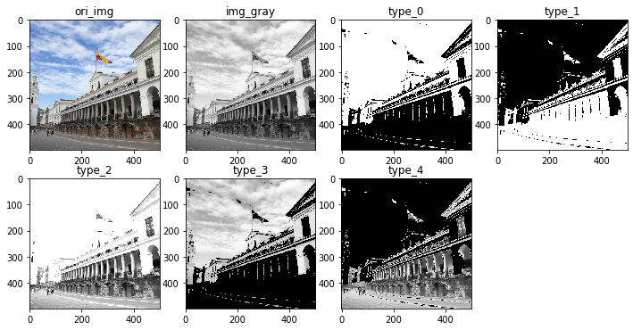
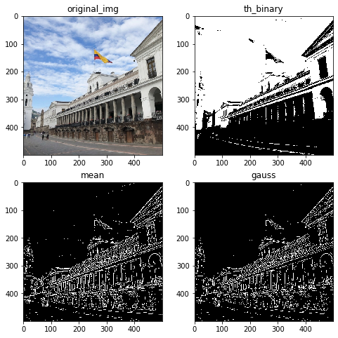
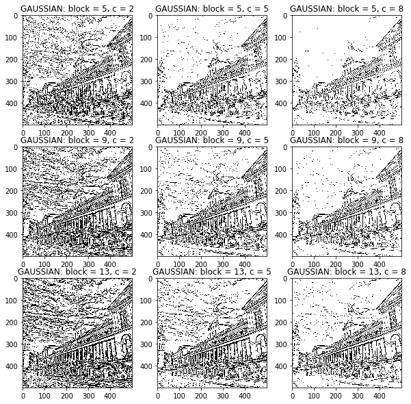
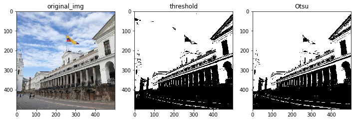
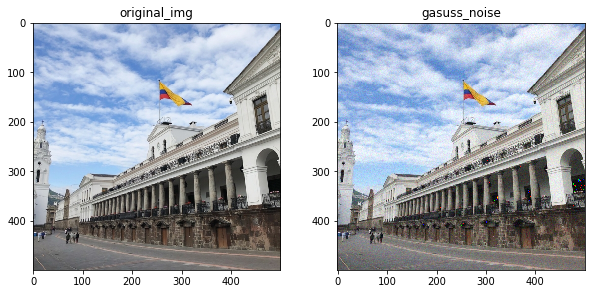
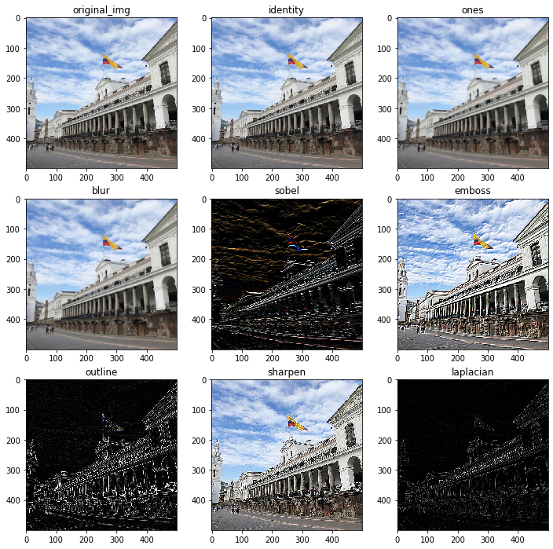
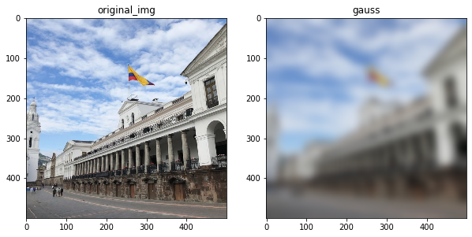
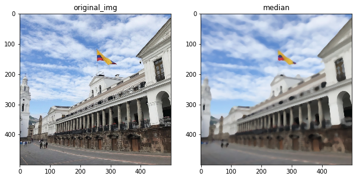
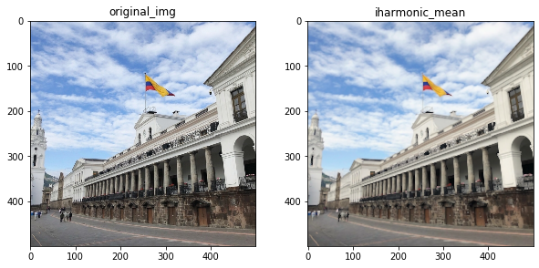

以下所有代码在mac python3下测试通过。
#!/usr/bin/env python
# -*- coding:utf-8 -*-
from __future__ import division
from __future__ import print_function
%matplotlib inline# 本文中主要使用cv2处理图片，但不利于在notebook中展示，所以使用plt输出前做简单处理
def img_convert(cv2_img):
"""
cv2使用BGR，plt使用RGB
包含灰度，3通道，4通道
下面这个不好使
ret_img = cv2.cvtColor(ret_img, cv2.COLOR_BGR2RGB)
"""
if len(cv2_img.shape) == 2:
return cv2_img
elif len(cv2_img.shape) == 3 and cv2_img.shape[2] == 3:
b, g, r = cv2.split(cv2_img)
return cv2.merge((r, g, b))
elif len(cv2_img.shape) == 3 and cv2_img.shape[2] == 4:
b, g, r, a = cv2.split(cv2_img)
return cv2.merge((r, g, b, a))
else:
return cv2_img阈值
threshold 简单阈值
介绍
顾名思义，通过阈值处理，大于为1，小于则为0，使用函数cv2.threshold()。参数解释如下：
ret, dst = cv2.threshold (src, thresh, maxval, type)
- src：源图片，必须是单通道
- dst：输出图
- thresh：阈值，取值范围0～255
- maxval：填充色，取值范围0～255
- type：阈值类型，具体见下表
| 阈值 | 小于阈值的像素点 | 大于阈值的像素点 |
|---|---|---|
| 0 | 置0 | 置填充色 |
| 1 | 置填充色 | 置0 |
| 2 | 保持原色 | 置灰色 |
| 3 | 置0 | 保持原色 |
| 4 | 保持原色 | 置0 |
type还可以写为如下：
type：二值化操作的类型，包含以下5种类型： cv2.THRESH_BINARY； cv2.THRESH_BINARY_INV； cv2.THRESH_TRUNC； cv2.THRESH_TOZERO；cv2.THRESH_TOZERO_INV
实现
import numpy as np
import cv2
import matplotlib.pyplot as pltori_img = cv2.imread('../Fast_neural_style/img_d2cfac63.jpeg')
# 现转化为单通道图
img_gray = cv2.cvtColor(ori_img, cv2.COLOR_RGB2GRAY)
imgs = [ori_img] + [img_gray]
title = ['ori_img', 'img_gray']
# 简单阈值处理
for typ in range(0, 5, 1):
_, thresh = cv2.threshold(img_gray, 150, 255, type=typ)
title.append('type_' + str(typ))
imgs = imgs + [thresh]
# 可视化
plt.figure(figsize=(12,6))
for i in range(7):
plt.subplot(2, 4, i + 1), plt.imshow(img_convert(imgs[i]), 'gray')
plt.title(title[i])
plt.show()
adaptiveThreshold 自适应阈值
介绍
简单阈值对图片对处理过于简单粗暴，特别是对对色彩复杂图片，处理后很多细节都无法复现。自适应阈值则根据图像上的每个小区域计算与其对应的阈值，不同区域采用不同阈值。可使用cv2.adaptiveThreshold()实现。参数解释如下：
dst = cv2.adaptiveThreshold(src, maxval, thresh_type, type, Block Size, C)
- src：源图片，只能输入单通道图像
- dst： 输出图
- maxval： 当像素值超过了阈值（或者小于阈值，根据type来决定），所赋予的值
- thresh_type： 阈值的计算方法，包含以下2种类型：cv2.ADAPTIVE_THRESH_MEAN_C，阈值即取相邻领域的平均值； cv2.ADAPTIVE_THRESH_GAUSSIAN_C，阈值同样取自相邻领域，只是不再是平均值，而是加权平均，权重为一个高斯窗口
- type：二值化操作的类型，与固定阈值函数相同，包含以下2种类型： cv2.THRESH_BINARY； cv2.THRESH_BINARY_INV“
- Block Size： 图片中分块的大小
- C ：阈值计算方法中的常数项
实现
ret, th1 = cv2.threshold(img_gray, 150, 255, cv2.THRESH_BINARY)
th2 = cv2.adaptiveThreshold(img_gray, 255, cv2.ADAPTIVE_THRESH_MEAN_C, cv2.THRESH_BINARY_INV, 5, 12)
th3 = cv2.adaptiveThreshold(img_gray, 255, cv2.ADAPTIVE_THRESH_GAUSSIAN_C, cv2.THRESH_BINARY_INV, 5, 10)
plt.figure(figsize=(8, 8))
plt.subplot(221), plt.imshow(img_convert(ori_img), cmap='gray'), plt.title('original_img')
plt.subplot(222), plt.imshow(img_convert(th1), cmap='gray'), plt.title('th_binary')
plt.subplot(223), plt.imshow(img_convert(th2), cmap='gray'), plt.title('mean')
plt.subplot(224), plt.imshow(img_convert(th3), cmap='gray'), plt.title('gauss')
plt.show()

改变Block Size和c能得到不同的图片处理结果，以GAUSSIAN为例。
imgs = [[]]
title = []
# 简单阈值处理
for block in range(5, 15, 4):
for c in range(2, 10, 3):
th = cv2.adaptiveThreshold(img_gray, 255, cv2.ADAPTIVE_THRESH_GAUSSIAN_C, cv2.THRESH_BINARY, block, c)
title.append('GAUSSIAN: block = ' + str(block) + ', c = ' + str(c))
imgs = imgs + [th]
# 可视化
plt.figure(figsize=(10, 10))
for i in range(1, 10, 1):
plt.subplot(3, 3, i), plt.imshow(img_convert(imgs[i]), 'gray')
plt.title(title[i - 1])
plt.show()
Otsu’s Binarization 基于直方图
Otsu过程
- 计算图像直方图
- 设定一阈值，把直方图强度大于阈值的像素分成一组，把小于阈值的像素分成另外一组
- 分别计算两组内的偏移数，并把偏移数相加
- 把0~255依照顺序多为阈值，重复1-3的步骤，直到得到最小偏移数，其所对应的值即为结果阈值
Otsu数学原理
Otsu的算法类似于聚类，针对的是双峰图，所以目的就是要找到一个阈值t，将这两峰分开，同时使得峰内的方差最小，这样便可以将两峰最大化的分开。判别过程中最大类间方差，主要函数如下：
$$w_{0} + w_{1} = 1$$
$$\mu = w_{0}\mu_{0} + w_{1}\mu_{1}$$
$$
\begin{align}
var & = w_{0} * (\mu_{0} - \mu)^{2} + w_{1} * (\mu_{1} - \mu)^{2} \
& = w_{0}w_{1}(\mu_{0} - \mu_{1})^{2}
\end{align}
$$
源论文：https://ieeexplore.ieee.org/stamp/stamp.jsp?tp=&arnumber=4310076
实现
ret1, th1 = cv2.threshold(img_gray, 150, 255, cv2.THRESH_BINARY)
ret2, th2 = cv2.threshold(img_gray, 0, 255, cv2.THRESH_BINARY + cv2.THRESH_OTSU)
plt.figure(figsize=(12, 6))
plt.subplot(131), plt.imshow(img_convert(ori_img), cmap='gray'), plt.title('original_img')
plt.subplot(132), plt.imshow(img_convert(th1), cmap='gray'), plt.title('threshold')
plt.subplot(133), plt.imshow(img_convert(th2), cmap='gray'), plt.title('Otsu')
plt.show()
噪声
椒盐噪声
简介
椒盐噪声也称为脉冲噪声，是图像中经常见到的一种噪声，它是一种随机出现的白点或者黑点，可能是亮的区域有黑色像素或是在暗的区域有白色像素（或是两者皆有）。
椒盐噪声包含两种噪声，一种是盐噪声（salt noise），另一种是胡椒噪声（pepper noise）。 盐=白色，椒=黑色
常用的去除这种噪声的有效手段是使用中值滤波器。
实现
import randomdef sp_noise(image, prob):
'''
添加椒盐噪声
prob:噪声比例
'''
output = np.zeros(image.shape,np.uint8)
thres = 1 - prob
for i in range(image.shape[0]):
for j in range(image.shape[1]):
rdn = random.random()
if rdn < prob:
output[i][j] = 0
elif rdn > thres:
output[i][j] = 255
else:
output[i][j] = image[i][j]
return output
out_img = sp_noise(ori_img, 0.02)
plt.figure(figsize=(10,10))
plt.subplot(221), plt.imshow(img_convert(ori_img), cmap='gray'), plt.title('original_img')
plt.subplot(222), plt.imshow(img_convert(out_img), cmap='gray'), plt.title('sp_noise')
plt.show()高斯噪声
简介
椒盐噪声是直接随机的增加白点和黑点，高斯噪声则不然，它是指概率密度函数服从高斯分布（即正态分布）的一类噪声。和椒盐噪声最大的区别就为：
- 椒盐噪声使用random.random，高斯噪声使用random.normal
- 椒盐噪声直接置0、255，高斯噪声做加操作
def gasuss_noise(image, mean=0, var=0.001):
'''
添加高斯噪声
mean : 均值
var : 方差
'''
image = np.array(image/255, dtype=float)
noise = np.random.normal(mean, var ** 0.5, image.shape)
out = image + noise
if out.min() < 0:
low_clip = -1.
else:
low_clip = 0.
out = np.clip(out, low_clip, 1.0)
out = np.uint8(out*255)
#cv.imshow("gasuss", out)
return out
out_img = gasuss_noise(ori_img, 0.02)
plt.figure(figsize=(10,10))
plt.subplot(221), plt.imshow(img_convert(ori_img), cmap='gray'), plt.title('original_img')
plt.subplot(222), plt.imshow(img_convert(out_img), cmap='gray'), plt.title('gasuss_noise')
plt.show()
滤波/平滑
2D卷积
简介
2D卷积，即使用一个指定打下的卷积核对源图进行自定义处理，cv2.filter2D()函数供我们进行2D卷积。
dst=cv.filter2D(src, ddepth, kernel, anchor, delta, borderType)
- src：原图像
- dst：目标图像，与原图像尺寸和通过数相同
- ddepth：目标图像的所需深度
- kernel：卷积核（或相当于相关核），单通道浮点矩阵;如果要将不同的内核应用于不同的通道，请使用拆分将图像拆分为单独的颜色平面，然后单独处理它们。
- anchor：内核的锚点，指示内核中过滤点的相对位置;锚应位于内核中;默认值（-1，-1）表示锚位于内核中心。
- detal：在将它们存储在dst中之前，将可选值添加到已过滤的像素中。类似于偏置。
- borderType：像素外推法，参见BorderTypes
参考：https://www.kancloud.cn/aollo/aolloopencv/269599
实现
卷积核定义
# 分身（identity）就是不考虑边界时的原图（不考虑边界时
kernel0 = np.array((
[0, 0, 0],
[0, 1, 0],
[0, 0, 0]), dtype="float32")
# 单位核
kernel1 = np.ones((3, 3), np.float32) / 9
# 模糊（blur）内核消除了相邻像素值之间的差异
kernel2 = np.array((
[0.0625, 0.125, 0.0625],
[0.125, 0.25, 0.125],
[0.0625, 0.125, 0.0625]), dtype="float32")
# 索贝尔（sobel）内核用于仅显示特定方向上相邻像素值的差异，
# 分为left sobel、right sobel（检测梯度的水平变化）、top sobel、buttom sobel（检测梯度的垂直变化）
kernel3 = np.array((
[-1, -2, -1],
[0, 0, 0],
[1, 2, 1]), dtype="float32")
# 浮雕（emboss）通过强调像素的差在给定方向的Givens深度的错觉。在这种情况下，沿着从左上到右下的直线的方向。
kernel4 = np.array((
[-2, -1, 0],
[-1, 1, 1],
[0, 1, 2]), dtype="float32")
# 大纲（outline）是一个轮廓内核（也称为“边缘”的内核）用于突出显示的像素值大的差异。
# 具有接近相同强度的相邻像素旁边的像素在新图像中将显示为黑色，而与强烈不同的相邻像素相邻的像素将显示为白色。
kernel5 = np.array((
[-1, -1, -1],
[-1, 8, -1],
[-1, -1, -1]), dtype="float32")
# 锐化（sharpen）内核强调在相邻的像素值的差异。这使图像看起来更生动。
kernel6 = np.array((
[0, -1, 0],
[-1, 5, -1],
[0, -1, 0]), dtype="float32")
# 拉普拉斯算子（laplacian operator）可以用于边缘检测，对于检测图像中的模糊也非常有用。
kernel7 = np.array((
[0, 1, 0],
[1, -4, 1],
[0, 1, 0]), dtype="float32")
plt.figure(figsize=(12,12))
plt.subplot(331), plt.imshow(img_convert(ori_img), cmap='gray'), plt.title('original_img')
plt.subplot(332), plt.imshow(img_convert(cv2.filter2D(ori_img, -1, kernel0)), cmap='gray'), plt.title('identity')
plt.subplot(333), plt.imshow(img_convert(cv2.filter2D(ori_img, -1, kernel1)), cmap='gray'), plt.title('ones')
plt.subplot(334), plt.imshow(img_convert(cv2.filter2D(ori_img, -1, kernel2)), cmap='gray'), plt.title('blur')
plt.subplot(335), plt.imshow(img_convert(cv2.filter2D(ori_img, -1, kernel3)), cmap='gray'), plt.title('sobel')
plt.subplot(336), plt.imshow(img_convert(cv2.filter2D(ori_img, -1, kernel4)), cmap='gray'), plt.title('emboss')
plt.subplot(337), plt.imshow(img_convert(cv2.filter2D(ori_img, -1, kernel5)), cmap='gray'), plt.title('outline')
plt.subplot(338), plt.imshow(img_convert(cv2.filter2D(ori_img, -1, kernel6)), cmap='gray'), plt.title('sharpen')
plt.subplot(339), plt.imshow(img_convert(cv2.filter2D(ori_img, -1, kernel7)), cmap='gray'), plt.title('laplacian')
plt.show()
平均滤波
简介
平均滤波使用归一化卷积核完成，即卷积核的所有元素和为1。主要思想为将卷积核覆盖的所有像素求平均值，并将这个值作为结果赋给中心像素。也可以使用filter2D完成，不过cv2提供了直接的函数。可以使用cv2.blur()或cv2.boxFilter() 实现。如果不想使用归一化卷积核，那么应该用后者，并且设置参数normalize = False
实现
dst = cv2.blur(ori_img, (5, 5))
plt.figure(figsize=(10, 10))
plt.subplot(121), plt.imshow(img_convert(ori_img), cmap='gray'), plt.title('original_img')
plt.subplot(122), plt.imshow(img_convert(dst), cmap='gray'), plt.title('dst')
plt.show()高斯滤波
简介
其原理与平均滤波相同，不同的是此处变成了加权平均，而这个权服从二维高斯分布。方框中心的值最大，其余方框根据距离中心元素的距离递减，构成一个高斯小山包，原来的求平均数变成求加权平均数，权就是方框里的值。实现的函数是cv2.GaussianBlur()。需要指定高斯核的宽和高（必须是奇数），以及高斯函数沿X,Y方向的标准差。
实现
dst = cv2.GaussianBlur(ori_img, (65, 65), 0)
plt.figure(figsize=(10, 10))
plt.subplot(121), plt.imshow(img_convert(ori_img), cmap='gray'), plt.title('original_img')
plt.subplot(122), plt.imshow(img_convert(dst), cmap='gray'), plt.title('gauss')
plt.show()
中值滤波
简介
用与卷积框对应像素的中值来替代中心像素的值，这个滤波器经常用来去除椒盐噪声。前面的滤波器都是用计算得到的一个新值来取代中心像素的值，而中值滤波是用中心像素周围或者本身的值来取代他，他能有效去除噪声。卷积核的大小为是一个奇数。
实现
dst = cv2.medianBlur(ori_img, 9)
plt.figure(figsize=(10, 10))
plt.subplot(121), plt.imshow(img_convert(ori_img), cmap='gray'), plt.title('original_img')
plt.subplot(122), plt.imshow(img_convert(dst), cmap='gray'), plt.title('median')
plt.show()
双边滤波
简介
高斯滤波器只考虑像素之间的空间关系，而不会考虑像素值之间的关系（像素的相似度），所以这种方法不会考虑一个像素是否位于边界，因此边界也会被模糊掉。
双边滤波在同时使用空间高斯权重和灰度值相似性高斯权重。空间高斯函数确保只有邻近区的像素对中心点有影响，灰度值相似性高斯函数确保只有与中心像素灰度值相近的才会被用来做模糊运算，边界处的灰度值变化比较大，所以能保证边界不会被模糊。函数cv2.bilateralFilter()能在保持边界清晰的情况下有效的去除噪音，但比较慢。
实现
dst = cv2.bilateralFilter(ori_img, 9, 75, 75)
plt.figure(figsize=(10, 10))
plt.subplot(121), plt.imshow(img_convert(ori_img), cmap='gray'), plt.title('original_img')
plt.subplot(122), plt.imshow(img_convert(dst), cmap='gray'), plt.title('bilateral')
plt.show()算术均值滤波
介绍
顾名思义，算术均值滤波器即求某一范围内图像的均值，代替范围中心点的值。算术平均数计算如下：
$$A = \frac{x_{1} + x_{2} + \cdots + x_{n}}{n}$$
实现
def arithmetic_mean(image):
new_image = np.zeros(image.shape)
image = cv2.copyMakeBorder(image, 1, 1, 1, 1, cv2.BORDER_DEFAULT)
for i in range(1, image.shape[0] - 1):
for j in range(1, image.shape[1] - 1):
new_image[i - 1, j - 1] = np.mean(image[i - 1: i + 2, j - 1: j + 2])
new_image = (new_image - np.min(image)) * (255 / np.max(image))
return new_image.astype(np.uint8)
def rgb_arithmetic_mean(image):
r,g,b = cv2.split(image)
r = arithmetic_mean(r)
g = arithmetic_mean(g)
b = arithmetic_mean(b)
return cv2.merge([r, g, b])
out_img = rgb_arithmetic_mean(ori_img)
plt.figure(figsize=(10,10))
plt.subplot(221), plt.imshow(img_convert(ori_img), cmap='gray'), plt.title('original_img')
plt.subplot(222), plt.imshow(img_convert(out_img), cmap='gray'), plt.title('arithmetic_mean')
plt.show()
几何均值滤波
介绍
和算术均值滤波不同的是，此处取某一选定区域内的几何均值，几何均值计算如下：
$$A = \sqrt[n]{x_{1} * x_{2} * \cdots * x_{n}}$$
实现
def geometric_mean_operator(roi):
roi = roi.astype(np.float64)
p = np.prod(roi)
return p ** (1 / (roi.shape[0] * roi.shape[1]))
def geometric_mean(image):
new_image = np.zeros(image.shape)
image = cv2.copyMakeBorder(image, 1, 1, 1, 1, cv2.BORDER_DEFAULT)
for i in range(1, image.shape[0] - 1):
for j in range(1, image.shape[1] - 1):
new_image[i - 1, j - 1] = geometric_mean_operator(image[i - 1: i + 2, j - 1: j + 2])
new_image = (new_image - np.min(image)) * (255 / np.max(image))
return new_image.astype(np.uint8)
def rgb_geometric_mean(image):
r,g,b = cv2.split(image)
r = geometric_mean(r)
g = geometric_mean(g)
b = geometric_mean(b)
return cv2.merge([r, g, b])
out_img = rgb_geometric_mean(ori_img)
plt.figure(figsize=(10,10))
plt.subplot(221), plt.imshow(img_convert(ori_img), cmap='gray'), plt.title('original_img')
plt.subplot(222), plt.imshow(img_convert(out_img), cmap='gray'), plt.title('geometric_mean')
plt.show()
谐波均值
介绍
即调和均值，计算如下：
$$H = \frac{n}{\frac{1}{x_{1}} + \frac{1}{x_{2}} + \cdots + \frac{1}{x_{n}}}$$
注意：$x$不能为0
实现
import scipy
import scipy.statsdef harmonic_mean_operator(roi):
roi = roi.astype(np.float64)
if 0 in roi:
roi = 0
else:
roi = scipy.stats.hmean(roi.reshape(-1))
return roi
def harmonic_mean(image):
new_image = np.zeros(image.shape)
image = cv2.copyMakeBorder(image, 1, 1, 1, 1, cv2.BORDER_DEFAULT)
for i in range(1, image.shape[0] - 1):
for j in range(1, image.shape[1] - 1):
new_image[i - 1, j - 1] = harmonic_mean_operator(image[i - 1: i + 2, j - 1: j + 2])
new_image = (new_image - np.min(image)) * (255 / np.max(image))
return new_image.astype(np.uint8)
def rgb_harmonic_mean(image):
r, g, b = cv2.split(image)
r = harmonic_mean(r)
g = harmonic_mean(g)
b = harmonic_mean(b)
return cv2.merge([r, g, b])
out_img = rgb_harmonic_mean(ori_img)
plt.figure(figsize=(10,10))
plt.subplot(221), plt.imshow(img_convert(ori_img), cmap='gray'), plt.title('original_img')
plt.subplot(222), plt.imshow(img_convert(out_img), cmap='gray'), plt.title('harmonic_mean')
plt.show()逆谐波均值
介绍
计算公式为：
$$f(x, y) = \frac{\sum_{(x, t) \in S_{xy}}g(s, t)^{Q + 1}}{\sum_{(x, t) \in S_{xy}}g(s, t)^{Q}}$$
- 当Q是正值时滤波对去除“胡椒”噪声有效
- 当Q是负值时滤波对去除“盐”噪声有效
实现
def iharmonic_mean_operator(roi, q):
roi = roi.astype(np.float64)
return np.mean((roi) ** (q + 1)) / np.mean((roi) ** (q))
def iharmonic_mean(image, q):
new_image = np.zeros(image.shape)
image = cv2.copyMakeBorder(image, 1, 1, 1, 1, cv2.BORDER_DEFAULT)
for i in range(1, image.shape[0] - 1):
for j in range(1, image.shape[1] - 1):
new_image[i - 1, j - 1] = iharmonic_mean_operator(image[i - 1: i + 2, j - 1: j + 2], q)
new_image = (new_image - np.min(image)) * (255 / np.max(image))
return new_image.astype(np.uint8)
def rgb_iharmonic_mean(image, q):
r, g, b = cv2.split(image)
r = iharmonic_mean(r, q)
g = iharmonic_mean(g, q)
b = iharmonic_mean(b, q)
return cv2.merge([r, g, b])
out_img = rgb_iharmonic_mean(ori_img, 2)
plt.figure(figsize=(10,10))
plt.subplot(221), plt.imshow(img_convert(ori_img), cmap='gray'), plt.title('original_img')
plt.subplot(222), plt.imshow(img_convert(out_img), cmap='gray'), plt.title('iharmonic_mean')
plt.show()
简单总结
阈值方法可以对图片像素进行分类处理，噪声可以对原图片进行干扰，滤波和平滑可以对经过加噪声干扰过的图片进行部分修复复原。
end~